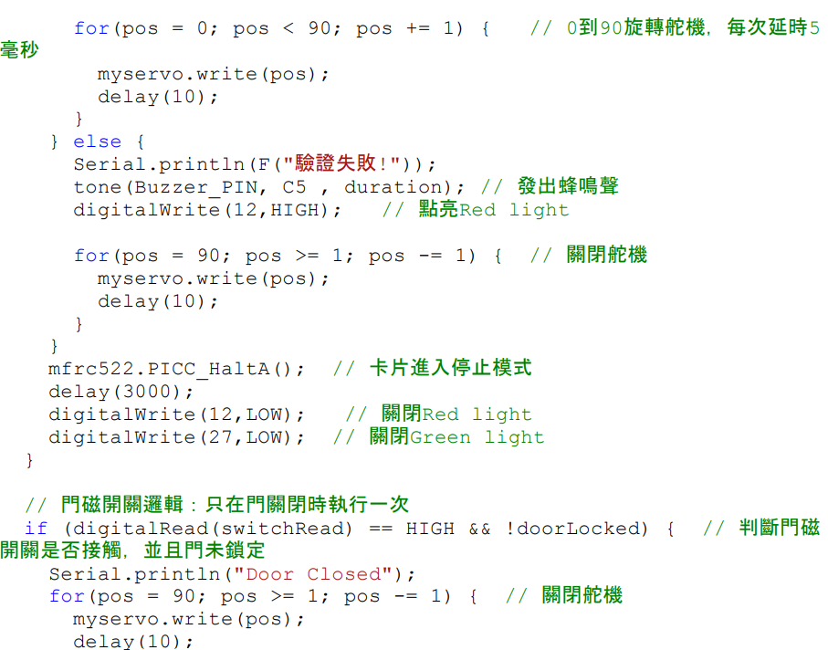

研究動機與摘要
本報告《智慧居家——基於物聯網的多功能居家監控與自動化控制系統》，旨在開發一套結合多種傳感器的智慧大門系統。隨著科技進步，我對電子鎖及居家自動化產生興趣，希望藉此研究深入了解其運作方式，打造具實際功能的智慧居家系統。
研究目標
利用人體紅外線感測器監測周遭人員移動，並透過 RFID 讀取器進行驗證，將數據傳送至 ESP32 進行判斷並連動馬達與警報系統。
核心功能
成功識別合法卡片時開啟大門；識別失敗則發出警報。門磁開關確保大門關閉後自動上鎖，模擬完整電子門鎖運作邏輯。
系統架構與設計流程

核心硬體整合
系統利用 ESP32 作為運算核心，整合多種傳感器。當 PIR 偵測到人體移動時啟動系統感應機制，並透過 RFID 讀取卡片 UID 進行身分驗證。
開發環境：Arduino IDE / C++ Programming
程式邏輯與開發實踐

演算法控制邏輯
在程式開發中，我實作了 RFID 的卡片比對邏輯，並結合 Blynk 函式庫進行 Wi-Fi 連線與遠端狀態顯示。
中斷處理 (Interrupts) 應用於 PIR 感測器
UID 十六進制格式輸出與驗證
非阻塞式 (Non-blocking) 蜂鳴器控制
研究結果與功能驗證
裝置全景與結構


研究裝置的正視圖與側視圖，展示硬體配線與實體封裝。
功能測試與實作畫面

驗證通過：SG90 動作
正確卡片感應後，伺服馬達轉動模擬開鎖。

Blynk 手機介面控制
透過雲端開關遠端控制 LED 並監控狀態。
研究總結與反思
在此次研究中，我不僅成功模擬了智慧居家系統的實用性，也展示了在技術整合與問題解決方面的能力。在解決 I2C 通訊衝突與優化門磁靈敏度的過程中，我體會到工程設計需要極大的細心與反覆測試。
未來優化重點：
- 加入人臉辨識模組增強安全性
- 開發開門紀錄資料庫與雲端日誌
- 優化機構設計以適應真實門體安裝